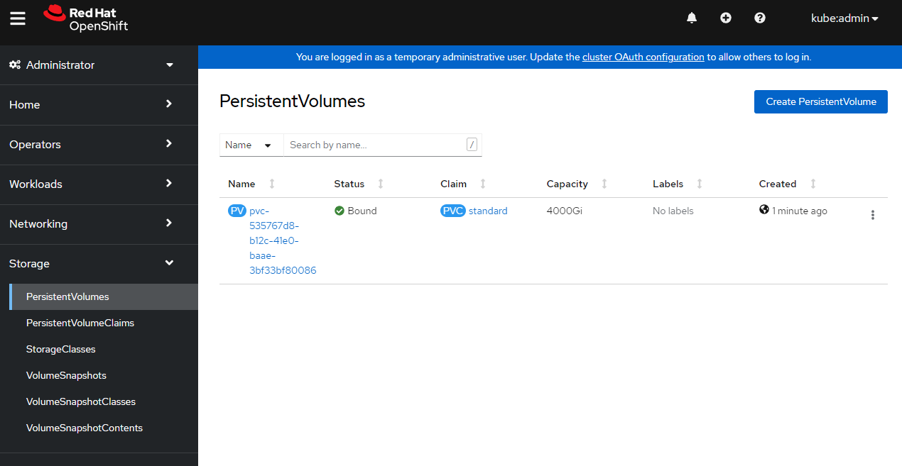

Trident NetApp operator setup for Azure NetApp files
Byron Miller
05/23/2022
Note: This guide a simple "happy path" to show the path of least friction to showcasing how to use NetApp files with Azure Red Hat OpenShift. This may not be the best behavior for any system beyond demonstration purposes.
Prerequisites
- An Azure Red Hat OpenShift cluster installed with Service Principal role/credentials.
- kubectl cli
- oc cli
- helm 3 cli{:target="_blank"}
- Review official trident documentation{:target="_blank"}
In this guide, you will need service principal and region details. Please have these handy.
- Azure subscriptionID
- Azure tenantID
- Azure clientID (Service Principal)
- Azure clientSecret (Service Principal Secret)
- Azure Region
If you don't have your existing ARO service principal credentials, you can create your own service principal and grant it contributor to be able to manage the required resources. Please review the official Trident documentation{:target="_blank"} regarding Azure NetApp files and required permissions.
Important Concepts
Persistent Volume Claims are namespaced objects{:target="_blank"}. Mounting RWX/ROX is only possible within the same namespace.
NetApp files must be have a delegated subnet within your ARO Vnet's and you must assign it to the Microsoft.Netapp/volumes service.
Configure Azure
You must first register the Microsoft.NetApp provider and Create a NetApp account on Azure before you can use Azure NetApp Files.
Register NetApp files
Azure Console{:target="_blank"}
or az cli
az provider register --namespace Microsoft.NetApp --wait
Create storage account
Again, for brevity I am using the same RESOURCE_GROUP and Service Principal that the cluster was created with.
Azure Console{:target="_blank"}
or az cli
RESOURCE_GROUP="myresourcegroup"
LOCATION="southcentralus"
ANF_ACCOUNT_NAME="netappfiles"
az netappfiles account create \
--resource-group $RESOURCE_GROUP \
--location $LOCATION \
--account-name $ANF_ACCOUNT_NAME
Create capacity pool
Creating one pool for now. The common pattern is to expose all three levels with unique pool names respective of each service level.
Azure Console{:target="_blank"}
or az cli:
POOL_NAME="Standard"
POOL_SIZE_TiB=4 # Size in Azure CLI needs to be in TiB unit (minimum 4 TiB)
SERVICE_LEVEL="Standard" # Valid values are Standard, Premium and Ultra
az netappfiles pool create \
--resource-group $RESOURCE_GROUP \
--location $LOCATION \
--account-name $ANF_ACCOUNT_NAME \
--pool-name $POOL_NAME \
--size $POOL_SIZE_TiB \
--service-level $SERVICE_LEVEL
Delegate subnet to ARO
Login to azure console, find the subnets for your ARO cluster and click add subnet. We need to call this subnet anf.subnet since that is the name we refer to in later configuration.

Install Trident Operator
Login/Authenticate to ARO
Login to your ARO cluster. You can create a token to login via cli straight from the web gui

oc login --token=sha256~abcdefghijklmnopqrstuvwxyz --server=https://api.randomseq.eastus.aroapp.io:6443
Helm Install
Download latest Trident package
wget https://github.com/NetApp/trident/releases/download/v22.04.0/trident-installer-22.04.0.tar.gz
Extract tar.gz into working director
tar -xzvf trident-installer-22.04.0.tar.gz
cd into installer
cd trident-installer/helm
Helm install
helm install trident-operator trident-operator-22.04.0.tgz
Example output from installation:
W0523 17:45:22.189592 30478 warnings.go:70] policy/v1beta1 PodSecurityPolicy is deprecated in v1.21+, unavailable in v1.25+
W0523 17:45:22.484071 30478 warnings.go:70] policy/v1beta1 PodSecurityPolicy is deprecated in v1.21+, unavailable in v1.25+
NAME: trident-operator
LAST DEPLOYED: Mon May 23 17:45:20 2022
NAMESPACE: openshift
STATUS: deployed
REVISION: 1
TEST SUITE: None
NOTES:
Thank you for installing trident-operator, which will deploy and manage NetApp's Trident CSI
storage provisioner for Kubernetes.
Your release is named 'trident-operator' and is installed into the 'openshift' namespace.
Please note that there must be only one instance of Trident (and trident-operator) in a Kubernetes cluster.
To configure Trident to manage storage resources, you will need a copy of tridentctl, which is
available in pre-packaged Trident releases. You may find all Trident releases and source code
online at https://github.com/NetApp/trident.
To learn more about the release, try:
$ helm status trident-operator
$ helm get all trident-operator
Validate
cd ..
./tridentctl -n openshift version
+----------------+----------------+
| SERVER VERSION | CLIENT VERSION |
+----------------+----------------+
| 22.04.0 | 22.04.0 |
+----------------+----------------+
Install tridentctl
I put all my cli's in /usr/local/bin
sudo install tridentctl /usr/local/bin
example output:
which tridentctl
/usr/local/bin/tridentctl
Create trident backend
FYI - Sample files for review are in sample-input/backends-samples/azure-netapp-files directory from the trident tgz we extracted earlier.
- Replace client ID with service principal ID
- Replace clientSecret with Service Principal Secret
- Replace tenantID with your account tenant ID
- Replace subscriptionID with your azure SubscriptionID
- Ensure location matches your Azure Region
Note: I have used nfsv3 for basic compatibility. You can remove that line and use NetApp files defaults.
vi backend.json
Add the following snippet:
{
"version": 1,
"nfsMountOptions": "nfsvers=3",
"storageDriverName": "azure-netapp-files",
"subscriptionID": "12abc678-4774-fake-a1b2-a7abcde39312",
"tenantID": "a7abcde3-edc1-fake-b111-a7abcde356cf",
"clientID": "abcde356-bf8e-fake-c111-abcde35613aa",
"clientSecret": "rR0rUmWXfNioN1KhtHisiSAnoTherboGuskey6pU",
"location": "southcentralus",
"subnet": "anf.subnet",
"labels": {
"cloud": "azure"
},
"storage": [
{
"labels": {
"performance": "Standard"
},
"serviceLevel": "Standard"
}
]
}
run
tridentctl -n openshift create backend -f backend.json
example output:
+------------------------+--------------------+--------------------------------------+--------+---------+
| NAME | STORAGE DRIVER | UUID | STATE | VOLUMES |
+------------------------+--------------------+--------------------------------------+--------+---------+
| azurenetappfiles_eb177 | azure-netapp-files | f7f211afe-d7f5-41a5-a356-fa67f25ee96b | online | 0 |
+------------------------+--------------------+--------------------------------------+--------+---------+
if you get a failure here, you can run to following command to review logs:
tridentctl logs
```
To view log output that may help steer you in the right direction.
### Create storage class
```bash
cat <<EOF | kubectl apply -f -
apiVersion: storage.k8s.io/v1
kind: StorageClass
metadata:
name: standard
provisioner: csi.trident.netapp.io
parameters:
backendType: "azure-netapp-files"
fsType: "nfs"
selector: "performance=Standard" # Matching labels in the backends...
allowVolumeExpansion: true # To allow volume resizing. This parameter is optional
mountOptions:
- nconnect=16
EOF
output:
storageclass.storage.k8s.io/standard created
Provision volume
Let's create a new project and set up a persistent volume claim. Remember that PV Claims are namespaced objects and you must create the pvc in the namespace where it will be allocated. I'll use the project "netappdemo".
oc new-project netappdemo
Now we'll create a PV claim in the "netappdemo" project we just created.
cat <<EOF | kubectl apply -f -
kind: PersistentVolumeClaim
apiVersion: v1
metadata:
name: standard
spec:
accessModes:
- ReadWriteMany
resources:
requests:
storage: 4000Gi
storageClassName: standard
EOF
output:
persistentvolumeclaim/standard created
Verify
Quick verification of storage, volumes and services.
Verify Kubectl
➜ kubectl get storageclass
NAME PROVISIONER RECLAIMPOLICY VOLUMEBINDINGMODE ALLOWVOLUMEEXPANSION AGEmanaged-premium (default) kubernetes.io/azure-disk Delete WaitForFirstConsumer true 3h26m
standard csi.trident.netapp.io Delete Immediate true 5m5s
➜
Verify OpenShift
Login to your cluster as cluster-admin and verify your storage classes and persistent volumes.
Storage Class

Persisent Volumes 
Create Pods to test Azure NetApp
We'll create two pods here to exercise the Azure NetApp file mount. One to write data and another to read data to show that it is mounted as "read write many" and correctly working.
Writer Pod
This pod will write "hello netapp" to a shared NetApp mount.
cat <<EOF | oc apply -f -
apiVersion: v1
kind: Pod
metadata:
name: test-netapp
labels:
app: test-aznetapp
deploymethod: trident
spec:
containers:
- name: aznetapp
image: centos:latest
command: ["/bin/bash", "-c", "--"]
resources:
limits:
cpu: 1
memory: "1Gi"
args:
[
"while true; do echo 'hello netapp' | tee -a /mnt/netapp-data/verify-netapp && sleep 5; done;",
]
volumeMounts:
- name: disk01
mountPath: "/mnt/netapp-data"
volumes:
- name: disk01
persistentVolumeClaim:
claimName: standard
EOF
You can watch for this container to be ready:
watch oc get pod test-netapp
Or view it in the OpenShift Pod console for the netappdemo project.

Reader Pod
This pod will read back the data from the shared NetApp mount.
cat <<EOF | oc apply -f -
apiVersion: v1
kind: Pod
metadata:
name: test-netapp-read
spec:
containers:
- name: test-netapp-read
image: centos:latest
command: ["/bin/bash", "-c", "--"]
resources:
limits:
cpu: 1
memory: "1Gi"
args: ["tail -f /mnt/netapp-data/verify-netapp"]
volumeMounts:
- name: disk01
mountPath: "/mnt/netapp-data"
volumes:
- name: disk01
persistentVolumeClaim:
claimName: standard
EOF
Now let's verify the POD is reading from shared volume.
oc logs test-netapp-read
hello netapp
hello netapp
hello netapp
hello netapp
hello netapp
hello netapp
hello netapp
hello netapp
hello netapp
hello netapp
You can also see the pod details in OpenShift for the reader: